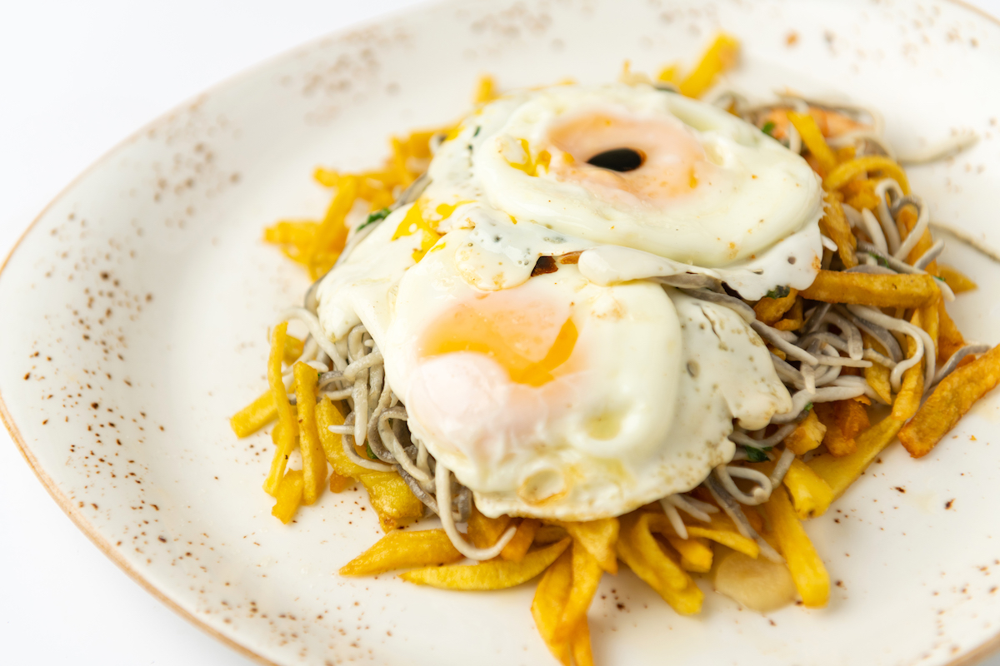
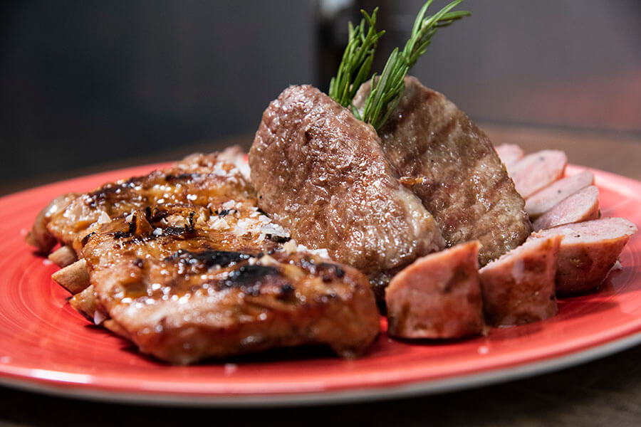

Seared Scallops with Truffle Risotto
Plump, succulent scallops are expertly seared to a delicate golden brown, creating a textural contrast with the creamy, aromatic truffle-infused risotto.

Italian Sauce Mushroom
An opulent creation that starts with a velvety, intensely flavored lobster bisque, garnished with a generous dollop of exquisite caviar.